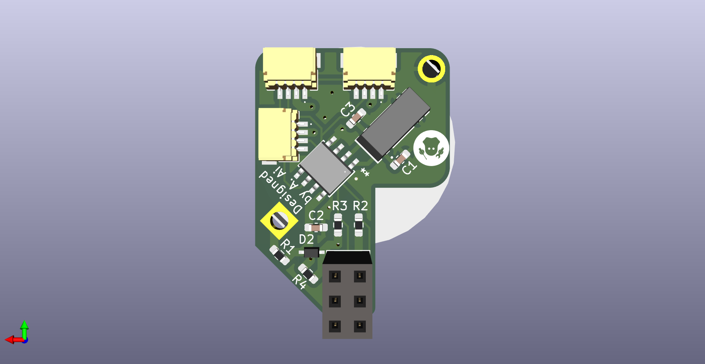
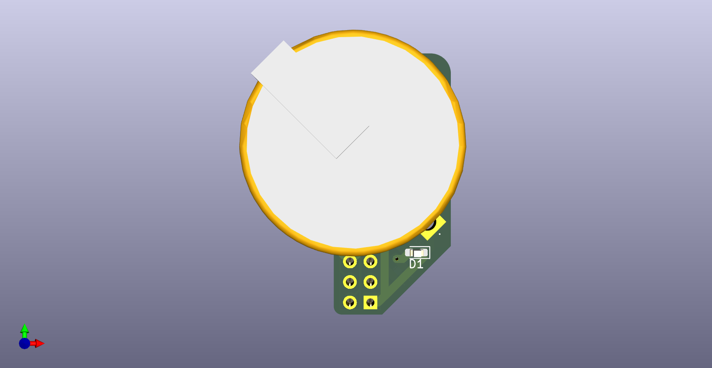
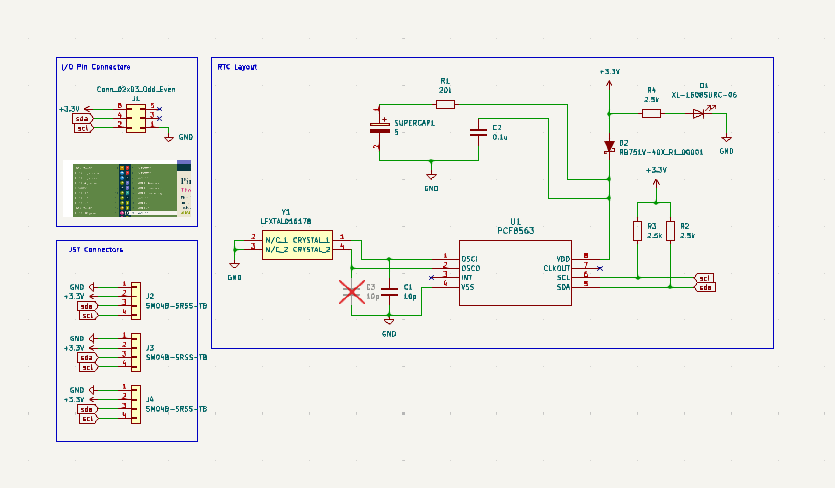
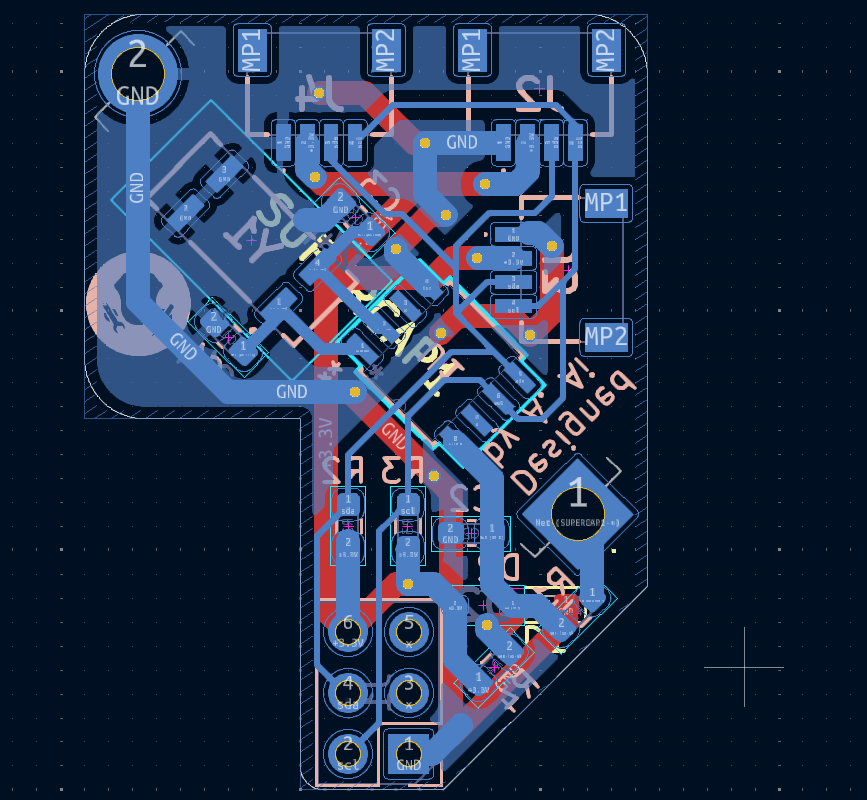

I designed a real-time clock board with a supercapacitor power source in KiCad to be used for SoM clock synchronization in GHOST, UT Austin’s VEX robotics team. GHOST use Jetson Orin Nanos as SoMs to deploy the team’s CV stack and automation, but the Orin’s internal clocks are misaligned when not connected to internet. The real-time clock board aims to address the issue by updating Orin’s internal clock via I2C with pre-tuned crystal oscillations. The design utilizes a PCF8563 real-time clock, LFXTAL016178 crystal, CE5R5505HF-ZJ 5 F double-layer supercapacitor, and a RB751V-40X_R1_00001 Schottky diode. Throughout the design process, I researched potential double-layer supercapacitor values to achieve a long operating time of the supercapacitor as a backup power source. With the current set of supercapacitor values (5 F, 15 Ohm ESR, 1 uA max current draw from PCF8563), it could operate for 3+ months. I also aimed to minimize the board size as much as possible to allow direct GPIO pin connection to the Orin and reduce surrounding system interference.
VEXU GHOST PCB Github Repository

